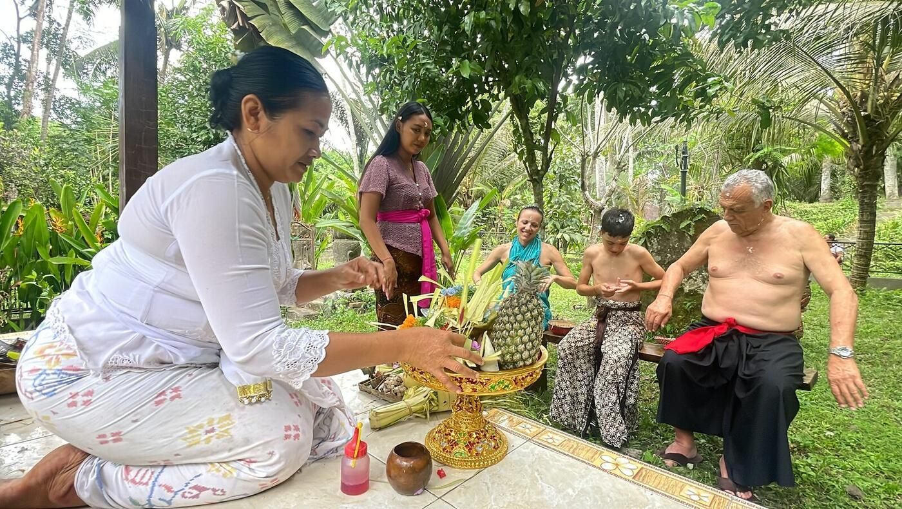
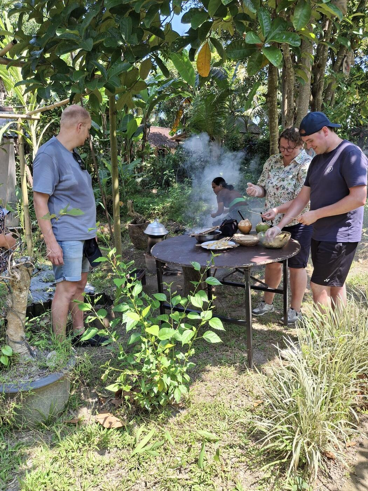
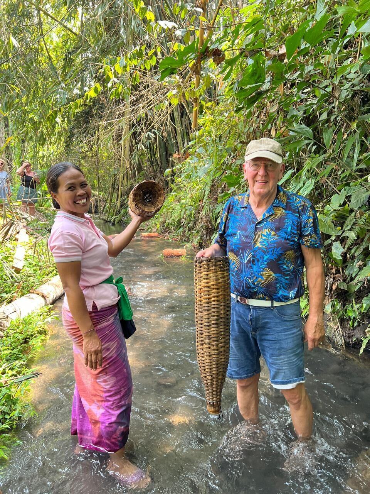
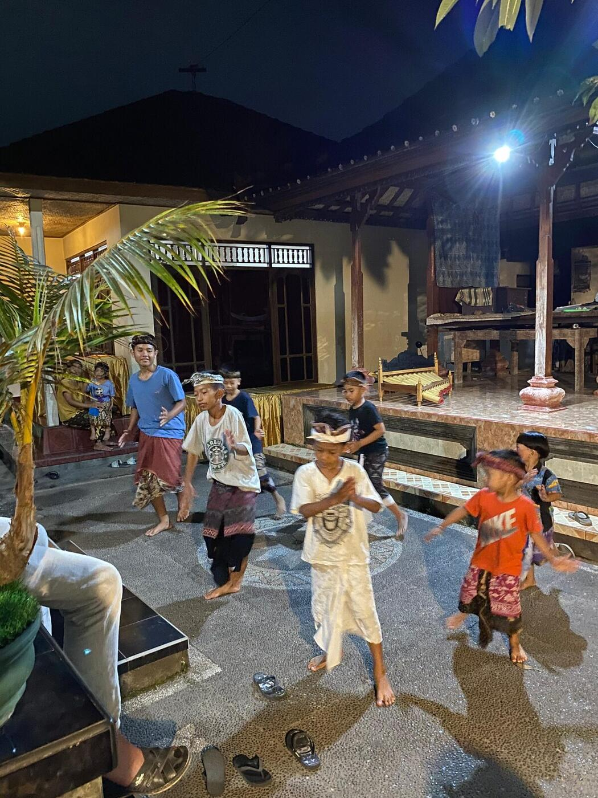

Our story
Why a village of rice farmers started welcoming guests into their homes — and what that means for the way we run every trip.

“Selamat Makan” isn't a slogan for us — it's what the family says before you eat at their table.
Happy Local Adventure is based in Medahan, a village in Gianyar where several families still farm rice using the centuries-old Subak irrigation system and cook over wood-fired stoves. We open the same doors we walk through every day: the family compound, the spring where the village bathes, the fields, the market.
Every trip is led by a local, English-speaking guide, and every meal, ceremony or trek is hosted by a real household in the village — not a set built for tourists. When you visit, a share of what you spend goes directly to the families who cook for you, farm for you, and lead the ceremonies you take part in.
- Locally owned and operated, based in Desa Medahan, Gianyar
- Fed by a chain of 11 natural springs, still used for daily life and ceremony
- Suitable for solo travellers, couples, families and small groups
- English-speaking guides who grew up in the village
Gallery
Placeholder slots below — swap each one for real photos from your trips.





